The solution of Tutorial 2.1, read as an engineer reads it: the pressure coefficient, contour lines, velocity vectors, streamlines, vorticity, the boundary-layer profile and the C_p curve along the airfoil, all with ParaView's filters.
OpenFOAM · Flujo incompresible · Tutorial 2.3
El posprocesamiento del NACA 0012 con ParaView
La solución del tutorial 2.1, leída como la lee un ingeniero: el coeficiente de presión, las líneas de contorno, los vectores de velocidad, las líneas de corriente, la vorticidad, el perfil de la capa límite y la curva de C_p sobre el perfil, todo con los filtros de ParaView.
OpenFOAM · Inkompressible Strömung · Tutorial 2.3
Die Nachbearbeitung des NACA 0012 in ParaView
Die Lösung aus Tutorial 2.1, wie sie ein Ingenieur liest: Druckbeiwert, Konturlinien, Geschwindigkeitsvektoren, Stromlinien, Wirbelstärke, das Grenzschichtprofil und die C_p-Kurve entlang des Profils, alles mit den Filtern von ParaView.
Estimated reading: 50 minLectura estimada: 50 minLesedauer: ca. 50 minLevel: undergraduateNivel: licenciaturaNiveau: BachelorVerified on ParaView 5.11.2 (blueCFD-Core 2024) with the Tutorial 2.1 resultsVerificado en ParaView 5.11.2 (blueCFD-Core 2024) con los resultados del tutorial 2.1Geprüft mit ParaView 5.11.2 (blueCFD-Core 2024) und den Ergebnissen aus Tutorial 2.1
Full English translation in preparation. Each section below carries a summary of its content; the complete text, figures and tables are available in the Spanish version, which the ES button above selects.
Open an OpenFOAM case in ParaView and build, filter by filter, the standard post-processing of an airfoil: pressure and velocity colour maps with sensible ranges, the pressure coefficient with a Calculator, contour lines, velocity vectors, streamlines, vorticity, a boundary-layer profile and the C_p curve along the airfoil; then save an image and the state.
The problem
What is post-processed
The solution is the NACA 0012 at 10° of Tutorial 2.1 (Re = 6·106, Spalart-Allmaras, 66 156 cells, far field at 500 chords). Nothing is recomputed: every picture is a different way of reading the same files.
The theory
What each picture says
The pressure coefficient Cp = p / (½U∞²) (p is kinematic in OpenFOAM), the stagnation value 1, the Bernoulli link between Cp and the speed outside the boundary layer, streamlines as integral curves of the velocity, vorticity ωz = ∂v/∂x − ∂u/∂y and the boundary-layer thickness.
Step by step
From the colour map to the C_p curve
paraFoam; Apply and Last Frame; colour by U and p; Edit Color Map and Rescale Custom Range; Calculator; the preset; Slice and Contour; Clip and Glyph; Stream Tracer; Gradient with vorticity; Save Screenshot; Plot Over Line; the second reader with the airfoil patch and Plot Data; Save State.
The pipeline
The filters, one by one
The pipeline: reader → Calculator1 (Cp) → Slice1 → Contour1; Clip1 → Glyph1; StreamTracer1; Gradient1; PlotOverLine1; and a second reader on the patch airfoil → Calculator2 → Slice2 → PlotData1.
Results
What the pictures show
Stagnation point at Cp = 1, the suction peak −5.55 on the nose, speeds up to 221 m/s, a thin boundary layer and a wake of low speed behind the trailing edge.
Worked example
Three checks on the pictures
Three checks: Cp = 1 at the stagnation point; the suction peak against CFL3D (−5.55 against −5.66); and Cp at x/c = 0.5 from Bernoulli with the speed outside the boundary layer against the value read on the airfoil.
Common errors
What goes wrong in ParaView
Everything is one colour (the range is dominated by one cell); the filter shows nothing (hidden parent or not applied); the vectors cover the page; the 3D slice; the line misses the airfoil; ParaView shows no x-axis.
Suggested exercise
The same pictures at 16°
Repeat the pictures with the a16 case of Tutorial 2.2, in a second view next to the 10° one, and compare the suction peaks and the thickness of the boundary layer.
Sources
References
ParaView Guide and tutorial; Anderson (2017); NASA Turbulence Modeling Resource; Schlichting and Gersten.
Objetivos de aprendizaje
Qué se debe poder hacer al terminar
El tutorial 2.1 dejó una solución en la carpeta 2000: millones de números, en archivos de texto. Casi nadie la lee así: se mira con un programa de posprocesamiento. Este tutorial hace ese posprocesamiento con ParaView, el que trae blueCFD-Core, y lo hace como se hace en un informe de aerodinámica: el campo de presión y el de velocidad con una escala que deje ver algo, el coeficiente de presión, las líneas de contorno, los vectores de velocidad, las líneas de corriente, la vorticidad, el perfil de velocidad de la capa límite y la curva de \(C_p\) sobre el perfil. No se calcula nada nuevo: cada imagen es una manera distinta de leer los mismos archivos.
Abrir un caso de OpenFOAM en ParaView, elegir el tiempo y el campo, y ajustar el rango y la paleta de color para que la imagen diga algo.
Construir un coeficiente nuevo con un Calculator (\(C_p\) a partir de la presión cinemática) y usarlo en los filtros que siguen.
Dibujar con filtros cuatro maneras de ver un campo: isolíneas (Contour), vectores (Glyph), líneas de corriente (Stream Tracer) y la vorticidad (Gradient).
Sacar números de una imagen: el perfil de velocidad de la capa límite con Plot Over Line y el \(C_p\) a lo largo del perfil con Plot Data sobre el parche airfoil.
Comprobar que lo que se ve es físico (tres comprobaciones) y guardar una imagen y el estado de ParaView para repetir todo en otro momento.
Qué hace falta. blueCFD-Core 2024 con su ParaView 5.11.2 y el caso del tutorial 2.1 ya calculado: la carpeta perfil-naca0012 de la carpeta de corridas, con el tiempo 2000 escrito (se calcula en unos minutos con la receta de ese tutorial; el caso se descarga en perfil-naca0012.zip). La guía no usa ningún guion: todo se hace con el ratón y con el panel de propiedades, como en el vídeo.
El problema
Qué se va a posprocesar
La solución es la del tutorial 2.1: el NACA 0012 a 10° con Re = 6·106, Spalart-Allmaras y un dominio de 500 cuerdas de radio (tabla 1). La malla es de una celda de espesor, de modo que cada campo vive en un plano; el perfil mide una cuerda y el dominio mil, así que lo primero que ParaView enseña es una mancha del tamaño del dominio, sin perfil: hay que acercarse.
Dato
Valor
Caso
perfil-naca0012, el del tutorial 2.1 ya calculado (carpeta 2000 escrita por foamRun)
Perfil y flujo
NACA 0012, α = 10°, Re = 6·106, |U∞| = 87.6245 m/s
Malla
66 156 celdas, una de espesor (0.01 m); dominio de 500 cuerdas de radio
Campos
p (cinemática), U, nut, nuTilda, yPlus y wallShearStress
Tiempo
2001 en el selector de ParaView (el último que escribió el solver)
Programa
ParaView 5.11.2, el que trae blueCFD-Core 2024; se abre con paraFoam
Tabla 1.El caso que se posprocesa. Es el caso del tutorial 2.1, sin cambios. Los datos de la columna derecha son los que aparecen en las imágenes de esta guía.
El orden de la receta es el de las preguntas que se hace quien posprocesa. Primero, ¿cómo se ve cada campo? (mapas de color de \(p\) y de \(U\), con el rango que haga falta). Después, ¿cómo se escribe en coeficientes? (el \(C_p\)). Luego, ¿qué forma tiene el flujo? (isolíneas, vectores, líneas de corriente, vorticidad). Y por último, ¿qué números hay dentro? (la capa límite y la curva de \(C_p\)). La tabla 2 es el índice de la receta.
Filtro
Entrada
Qué hace
Lo que se cambia
Calculator1
el lector
calcula Cp en cada punto
Result Array Name Cp; función p/(0.5*87.6245^2)
Slice1
Calculator1
deja una superficie plana: la malla es de una celda de espesor
Z Normal; el origen en z = 0.005
Contour1
Slice1
isolíneas de Cp
17 valores entre −3 y 1 (Add Range)
Clip1
Calculator1
recorta una caja alrededor del perfil
tipo Box; posición (−0.3, −0.4, −0.5) y longitud (1.8, 0.8, 1)
Glyph1
Clip1
flechas de velocidad
sin matriz de escala, factor 0.06, 500 puntos, muestreo en la superficie
StreamTracer1
Calculator1
líneas de corriente
línea de semillas de (−0.4, −0.25, 0.007) a (−0.4, 0.35, 0.007), 30 puntos, longitud 3
Gradient1
Calculator1
calcula la vorticidad de U
Scalar Array U, Compute Vorticity (en las propiedades avanzadas)
PlotOverLine1
Calculator1
perfil de velocidad sobre el extradós
recta vertical en x = 0.5, 800 puntos
segundo lector
el archivo .foam
sólo el parche airfoil
se desmarca internalMesh y se marca patch/airfoil
Calculator2, Slice2, PlotData1
el segundo lector
Cp a lo largo del perfil
eje x: Points_X; sólo la serie Cp
Tabla 2.Los filtros del tutorial, en el orden de la receta. Cada filtro nace del anterior; los valores son los que se escriben en el panel Properties de ParaView.
La teoría
Lo que dice cada imagen
El coeficiente de presión
En un solver incompresible la presión de OpenFOAM es cinemática, \(p/\rho\), con \(p_\infty = 0\) en el flujo libre (tutorial 2.1). El coeficiente de presión es la presión sin dimensiones respecto a la dinámica del flujo libre:
La última igualdad es la ecuación de Bernoulli, que vale fuera de la capa límite y de la estela, donde el flujo es casi sin fricción: donde el flujo se acelera, \(C_p\) baja; en el punto de remanso, \(U = 0\), \(C_p = 1\). El Calculator de ParaView escribe \(C_p\) como p/(0.5*87.6245^2).
Líneas de corriente, vectores e isolíneas
Una línea de corriente es una curva tangente en cada punto a la velocidad: en un flujo estacionario, la trayectoria que sigue una partícula. Stream Tracer la calcula integrando la velocidad a partir de unos puntos de arranque, las semillas; una línea de semillas antes del perfil, donde el flujo es casi uniforme, da una familia de líneas que se abren alrededor del perfil. Un vector (Glyph) es la velocidad en un punto, dibujada como una flecha; informa de la dirección en cada punto, no de la trayectoria. Una isolínea (Contour) es el conjunto de puntos donde un campo vale lo mismo: las isolíneas de \(C_p\) rodean la nariz, donde la presión cambia más rápido.
La vorticidad
La vorticidad es el rotacional de la velocidad, \(\boldsymbol{\omega} = \nabla\times\mathbf{U}\). En un flujo plano en x-y sólo tiene componente z:
Fuera de la capa límite el flujo es casi irrotacional y \(\omega_z \approx 0\); dentro de ella, \(\partial u/\partial y\) es enorme (la velocidad pasa de 0 en la pared a \(U_e\) en pocas centésimas de cuerda), y la vorticidad es grande y negativa en el extradós. Esa capa de vorticidad se desprende por el borde de salida y forma la estela. La vorticidad de la capa límite del extradós (negativa) y la del intradós (positiva) son de signo contrario: la circulación alrededor del perfil, que produce la sustentación.
La capa límite
El perfil de velocidad \(U(y)\) sobre la pared, en una x dada, sube desde cero hasta la velocidad \(U_e\) de la corriente que la rodea. El espesor \(\delta_{99}\) es la distancia a la pared donde \(U\) llega al 99 % de \(U_e\), y la pendiente en la pared, \(\partial U/\partial y|_w\), da el esfuerzo cortante \(\tau_w = \mu_{ef}\,\partial U/\partial y|_w\) (tutorial 2.1). La velocidad \(U_e\) conecta con la presión de la pared por Bernoulli: es la tercera comprobación de la validación.
Paso a paso
Del mapa de color a la curva de C_p
En el vídeo, la terminal de blueCFD-Core está a la izquierda y el Explorador a la derecha con la carpeta del caso; en la terminal sólo se escribe paraFoam. Todo lo demás se hace en ParaView, maximizado. Cada filtro se crea con su botón de la barra de herramientas (Common y Data Analysis) o con el buscador rápido de ParaView (Ctrl + Espacio, el nombre del filtro y Entrar).
1. Abrir el caso
En la terminal: cd $FOAM_RUN/perfil-naca0012 y paraFoam (crea el archivo perfil-naca0012.foam y abre ParaView).
Apply, y Last Frame (el tiempo 2001 del selector: la última carpeta escrita). Color por U, vista -Z (x hacia la derecha) y Reset Camera. El dominio de 1000 cuerdas es una mancha (figura 1): la cámara se acerca con Adjust Camera (el botón de la barra de la vista; figura 2): posición (0.5, 0, 2.6), punto focal (0.5, 0, 0.005) y vertical (0, 1, 0) dejan el perfil a la vista (figura 3). Quien prefiera el ratón puede usar dos Zoom to Box, como en el 2.1, pero la cámara escrita se repite igual después de cada filtro nuevo.
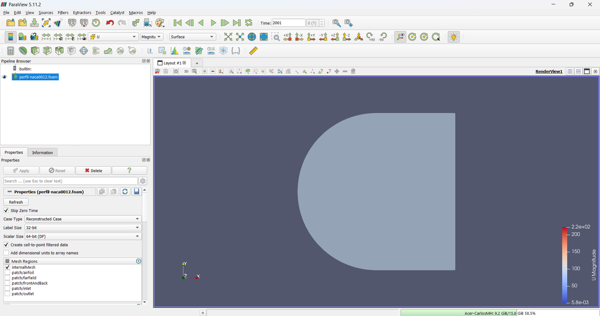
Figura 1.El dominio completo. Tras Apply, Last Frame, color por U, vista -Z y Reset Camera: con 1000 cuerdas de lado, el perfil es un punto en el centro y el color es casi uniforme.
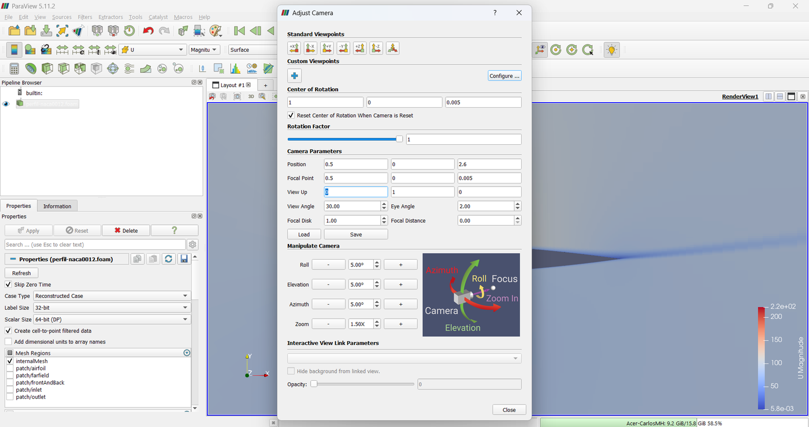
Figura 2.El cuadro Adjust Camera. La posición de la cámara en (0.5, 0, 2.6), el punto focal en (0.5, 0, 0.005) y el vector vertical en (0, 1, 0): a 2.6 de distancia, el perfil de una cuerda llena la vista.
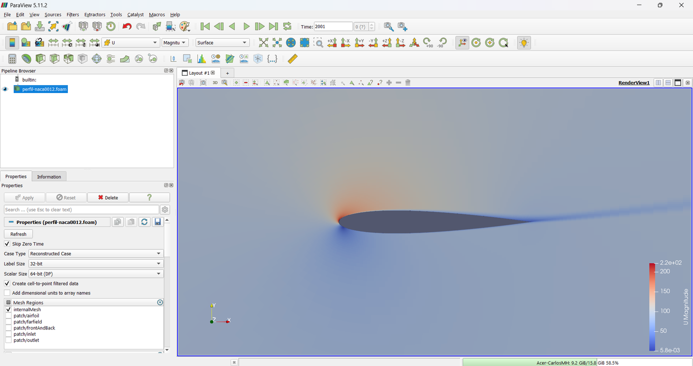
Figura 3.La velocidad alrededor del perfil. El mismo resultado del tutorial 2.1, con la cámara escrita: el remanso en la nariz, la succión encima (hasta 221 m/s) y la estela detrás.
2. El rango del mapa de color
Color por p: la escala va de \(-2.1\cdot10^4\) a \(3.8\cdot10^3\) y casi todo el campo es de un solo color (figura 4): el pico de succión de la nariz, en unas pocas celdas, fija el extremo.
Edit Color Map (el panel Color Map Editor a la derecha, figura 5) y, en la barra de color, Rescale to Custom Data Range: de −3000 a 1000 (tabla 3). Ahora se ve la presión alta del remanso y la baja sobre el extradós (figura 6).
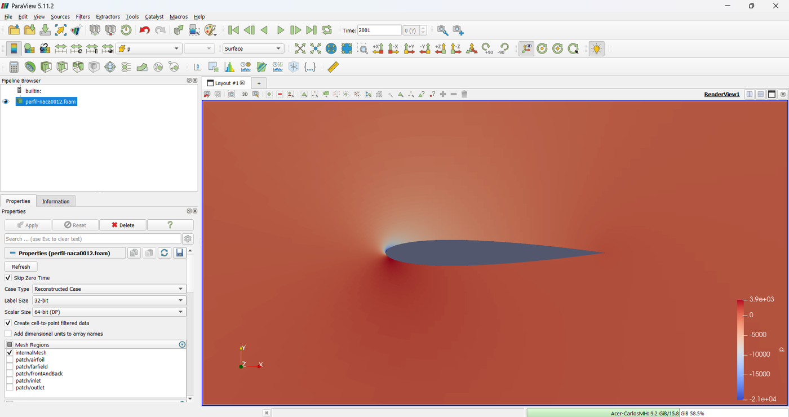
Figura 4.La presión, con el rango por omisión. La escala llega a −2.1·104: el pico de succión de la nariz fija el extremo y el resto del campo queda en un solo color.
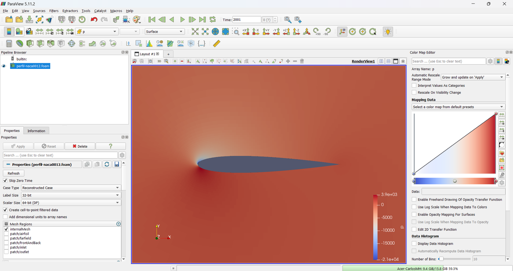
Figura 5.El editor del mapa de color.Edit Color Map abre el panel de la derecha; sus botones de rango, y los de la barra de herramientas de color (Rescale to Custom Data Range), cambian los extremos de la escala.
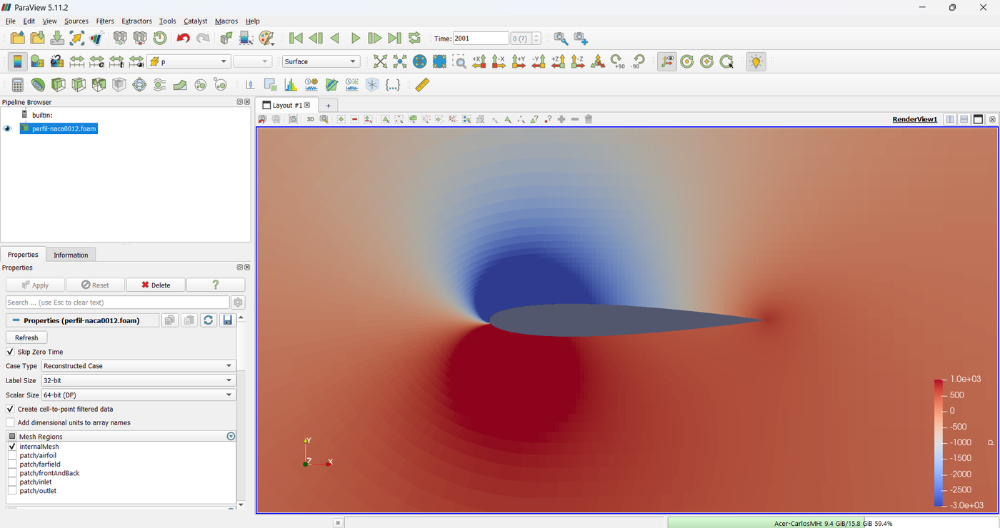
Figura 6.La presión, con un rango elegido. De −3000 a 1000 m²/s²: la presión alta delante de la nariz y en el borde de salida (rojo) y la baja sobre el extradós (azul).
Campo
Rango por omisión
Rango elegido
Por qué
p (m²/s²)
−2.1·104 a 3.8·103
−3000 a 1000
el pico de succión ocupa casi toda la escala; con el rango elegido se ve la presión sobre el resto del perfil
Cp
−5.6 a 1.0
−3 a 1
una escala redonda, con el 1 del punto de remanso arriba
Magnitud de U (m/s)
0 a 221
0 a 221
aquí el rango por omisión sirve: muestra desde el remanso hasta la velocidad máxima
Vorticidad ωz (1/s)
−8·106 a 1·106
−1000 a 1000
la capa límite tiene vorticidad enorme; el rango simétrico deja ver el signo y el borde de la estela
Tabla 3.El rango de color de cada campo. ParaView toma por omisión el mínimo y el máximo del campo, y en este caso los dos los fijan pocas celdas: el pico de succión de la nariz en p y la nariz misma en U. Con un rango elegido, el resto del campo se ve.
3. El coeficiente de presión
Con el lector seleccionado, Calculator: Result Array Name = Cp, función p/(0.5*87.6245^2) (la velocidad del flujo libre del caso, ecuación 1), Apply (figura 7). Color por Cp.
Rescale to Custom Data Range de −3 a 1, y en el editor de color, Choose Preset ▸ Turbo (doble clic). El punto de remanso queda rojo y la succión de la nariz, azul (figura 8).
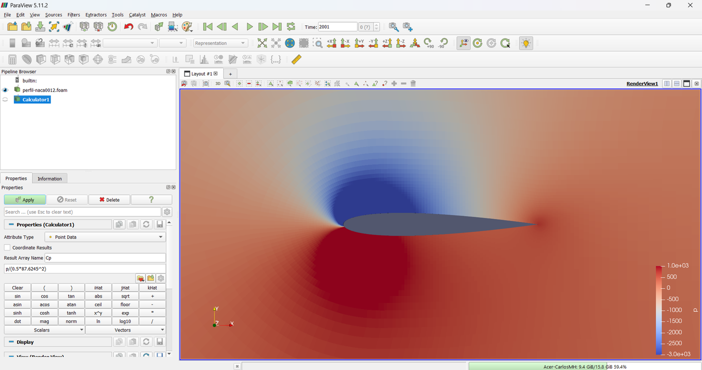
Figura 7.El Calculator del coeficiente de presión. El nombre del resultado y la función; el botón Apply, todavía verde, indica que falta aplicarlo.
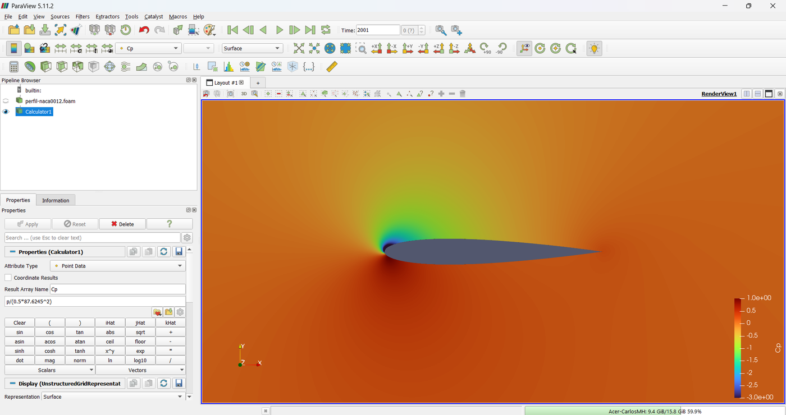
Figura 8.El coeficiente de presión. Paleta Turbo, de −3 a 1. Rojo en el remanso, azul en la succión de la nariz.
4. Isolíneas
Como el cálculo es de una sola celda de espesor, las isolíneas se hacen sobre un plano: con Calculator1 seleccionado, Slice con Z Normal y Apply. La vista no cambia; el filtro sólo deja una superficie de verdad plana.
Con Slice1, Contour: Contour By = Cp. Se borran los valores (Delete All) y Add a range of values de −3 a 1 con 17 muestras (un valor cada 0.25) (figura 9). Apply (figura 10).
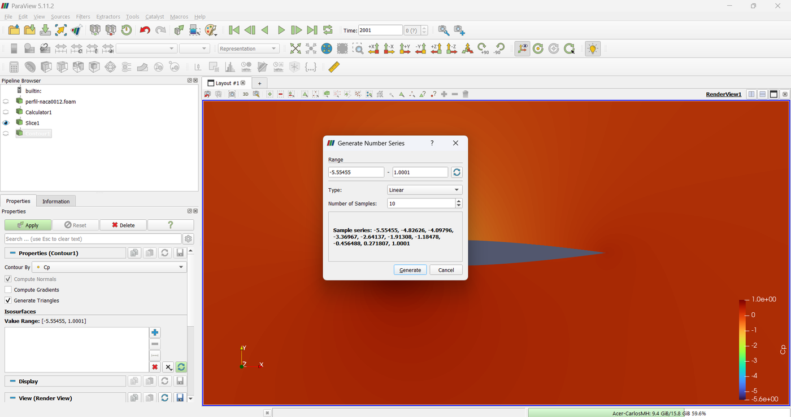
Figura 9.Los valores de las isolíneas.Add a range of values genera 17 valores equidistantes entre −3 y 1: uno cada 0.25.
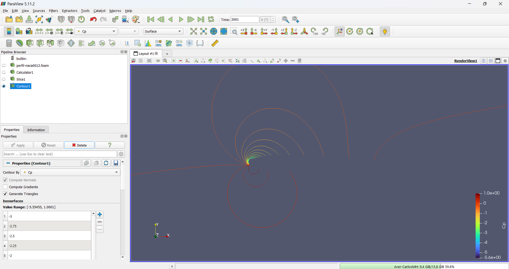
Figura 10.Las isolíneas de Cp. Se apiñan sobre la nariz, donde la presión cambia más rápido, y se abren hacia el campo lejano; el perfil queda en el cruce de las líneas más cerradas.
5. Vectores de velocidad
Con Calculator1, Clip: Clip Type = Box, posición (−0.3, −0.4, −0.5) y longitud (1.8, 0.8, 1) para quedarse con la zona de 1.8 × 0.8 cuerdas alrededor del perfil (figura 11), y Apply.
Con Clip1, Glyph y Apply (con los valores por omisión, flechas de colores desiguales, figura 12). Se cambia el Scale Array a No scale array (todas las flechas del mismo tamaño), Scale Factor = 0.06 y Glyph Mode = Uniform Spatial Distribution (Surface Sampling) con 500 puntos: así las flechas cubren el plano de forma pareja. Se colorea por U (figura 13).
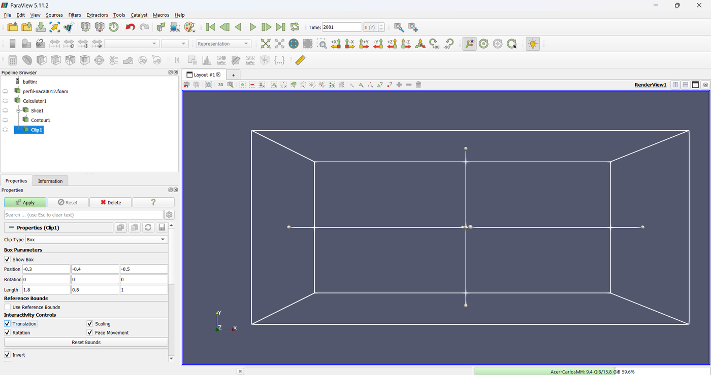
Figura 11.La caja del Clip. Una caja de 1.8 × 0.8 cuerdas alrededor del perfil (posición (−0.3, −0.4, −0.5), longitud (1.8, 0.8, 1)). Con Show Box, ParaView dibuja la caja; se apaga antes del Apply.
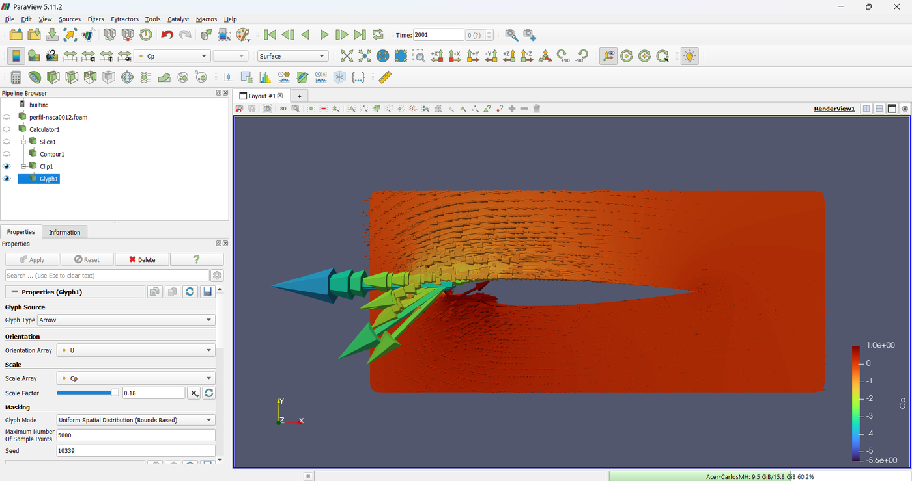
Figura 12.Glyph, con los valores por omisión. Una flecha por cada punto y escalada con Cp: unas enormes y otras casi invisibles.
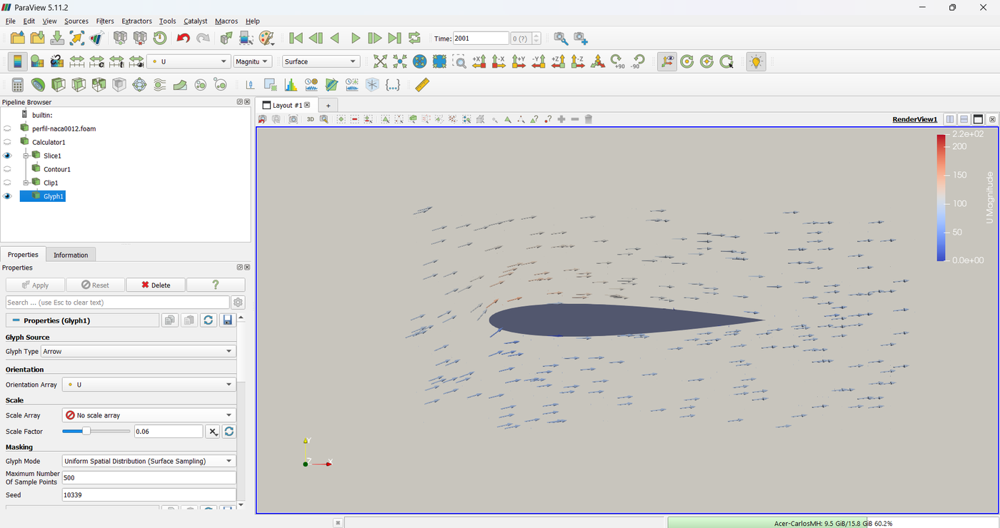
Figura 13.Los vectores de velocidad. Flechas del mismo tamaño (No scale array, factor 0.06), 500 puntos con muestreo uniforme en el plano, coloreadas por la magnitud de la velocidad.
6. Líneas de corriente
Con Calculator1, Stream Tracer. Seed Type = Line (la que trae); se cambian los extremos: Point1 = (−0.4, −0.25, 0.007), Point2 = (−0.4, 0.35, 0.007) y Resolution = 30, y la longitud máxima a 3. La línea de semillas queda delante de la nariz, donde el flujo es casi uniforme; la z de 0.007 la pone un poco delante del corte plano (z = 0.005), para que las líneas no queden tapadas por él.
Apply y Adjust Camera (los mismos valores). Las líneas de corriente bordean el perfil y se abren sobre el extradós, donde la velocidad es mayor (figura 14).
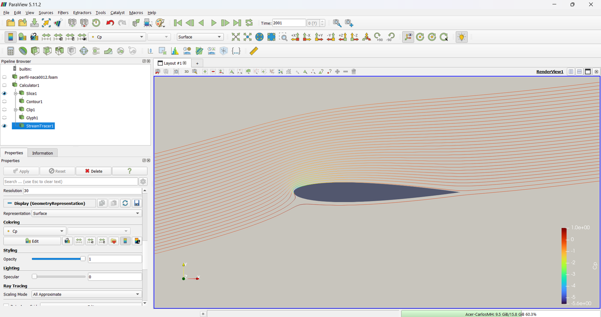
Figura 14.Las líneas de corriente. Treinta líneas desde la línea de semillas: bordean el perfil y se aprietan sobre el extradós.
7. La vorticidad
Con Calculator1, el buscador rápido: Ctrl + Espacio, Gradient, Entrar. Scalar Array = U. La vorticidad está en las propiedades avanzadas (el engrane del panel Properties, figura 15): se marca Compute Vorticity (y se desmarca Compute Gradient si no se va a usar) y Apply.
Color por Vorticity, componente Z, rango de −1000 a 1000 (figura 16). La capa límite aparece como una película delgada, azul en el extradós (rotación en sentido horario) y roja en el intradós, que se desprende en una estela.
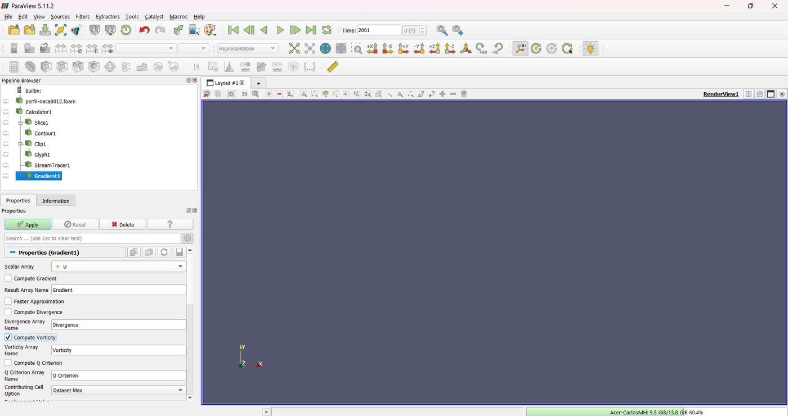
Figura 15.El filtro Gradient.Scalar Array = U y Compute Vorticity (visible sólo con las propiedades avanzadas, el engrane del panel Properties).
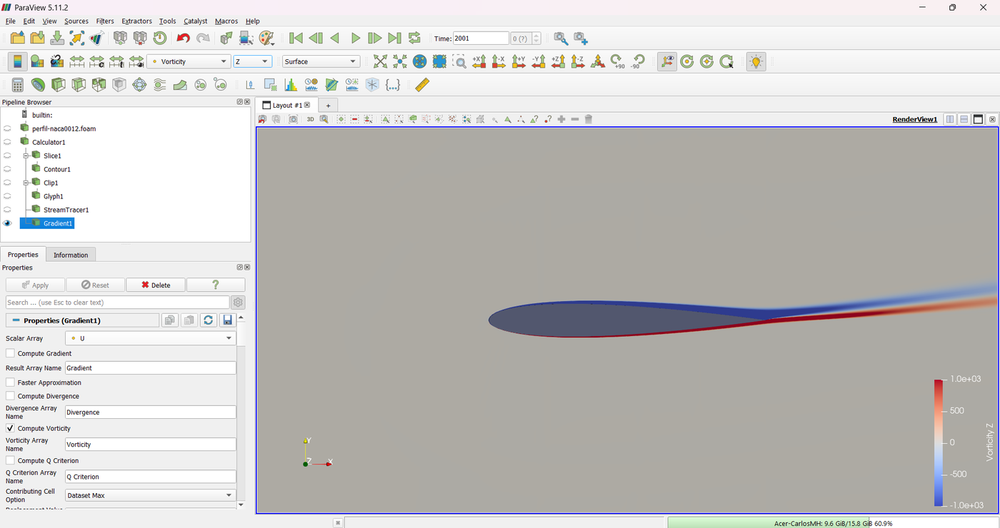
Figura 16.La vorticidad. Componente z, de −1000 a 1000 s−1: azul en la capa límite del extradós, rojo en la del intradós; ambas se desprenden en la estela.
8. Guardar una imagen
File ▸ Save Screenshot… (figura 17), el nombre figura.png en la carpeta del caso, y OK. La imagen es de la vista activa, a la resolución que muestra el cuadro (la de la ventana).
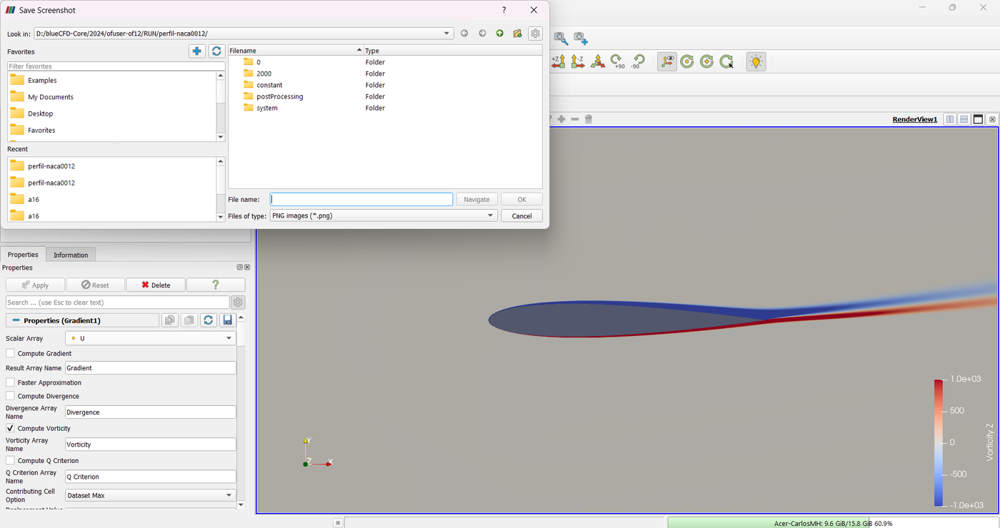
Figura 17.Guardar la imagen.File ▸ Save Screenshot…: el nombre del archivo; el cuadro siguiente pide la resolución y el formato.
9. El perfil de velocidad de la capa límite
Con Calculator1, Plot Over Line: Point1 = (0.5, 0.0522, 0.005) y Point2 = (0.5, 0.0722, 0.005): una recta vertical sobre el extradós en x/c = 0.5, que empieza apenas arriba de la pared (el perfil mide 0.0522 de semiespesor en esa x en la malla; en el vídeo y en la figura 18, Point1 conserva la z = 0 que trae por omisión, que da la misma curva porque el campo no cambia con z). Resolution = 800 y Apply.
ParaView abre una gráfica con todas las variables. En el panel Properties, con la sección de series (se escribe «series» en el buscador), se apagan todas con la casilla del encabezado y se enciende U_Magnitude (figura 19).
Figura 18.La recta de Plot Over Line. De (0.5, 0.0522) a (0.5, 0.0722): 0.02 cuerdas hacia arriba desde la pared en x/c = 0.5.
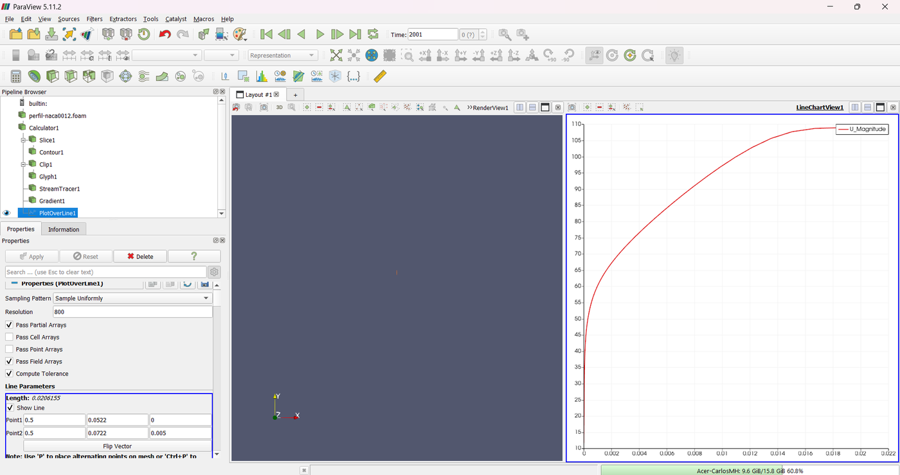
Figura 19.El perfil de velocidad.U_Magnitude contra la distancia a la recta: sube de 0 a 108.9 m/s y se aplana al salir de la capa límite (\(\delta_{99}\) = 0.0149 c).
10. El \(C_p\) a lo largo del perfil
File ▸ Open (o Ctrl + O) y el mismo perfil-naca0012.foam: un segundo lector. En Mesh Regions se desmarca internalMesh y se marca patch/airfoil (sólo la superficie del perfil) y Apply (figura 20).
A ese lector, Calculator (Cp, la misma función) y Slice (Z Normal), y Plot Data (Ctrl + Espacio). En el panel, se quita Use Index For XAxis, el eje X es Points_X y se deja sólo la serie Cp. La gráfica muestra las dos curvas del perfil, la del extradós, abajo, y la del intradós (figura 21).
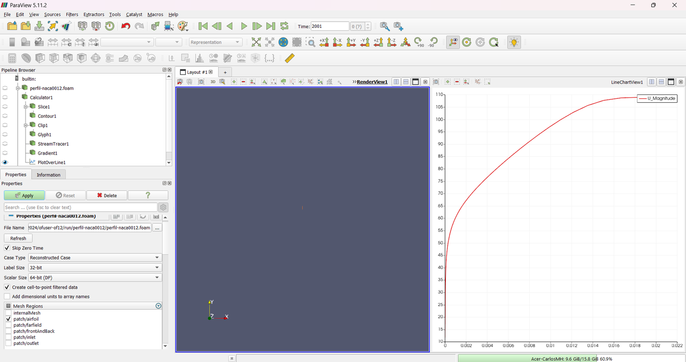
Figura 20.El segundo lector. En Mesh Regions: sin internalMesh y con patch/airfoil.
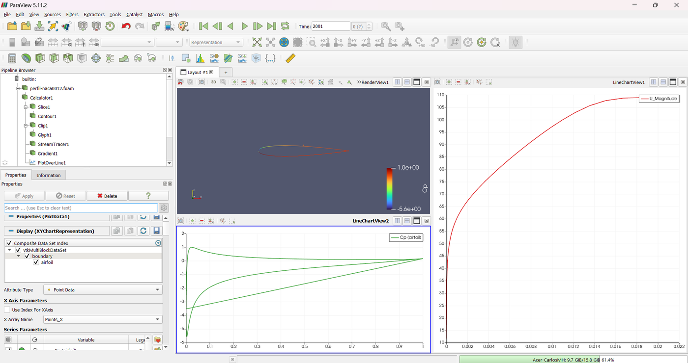
Figura 21.El Cp sobre el perfil. La curva de abajo, con la succión de la nariz (Cp = −5.55), es la del extradós; la de arriba, la del intradós, que sólo tiene un máximo de 1.00 en el remanso.
11. Guardar el estado
File ▸ Save State…, estado.pvsm en la carpeta del caso. Con File ▸ Load State… se recupera todo el árbol de filtros, con sus valores, en otra sesión o con otro caso (figura 22).
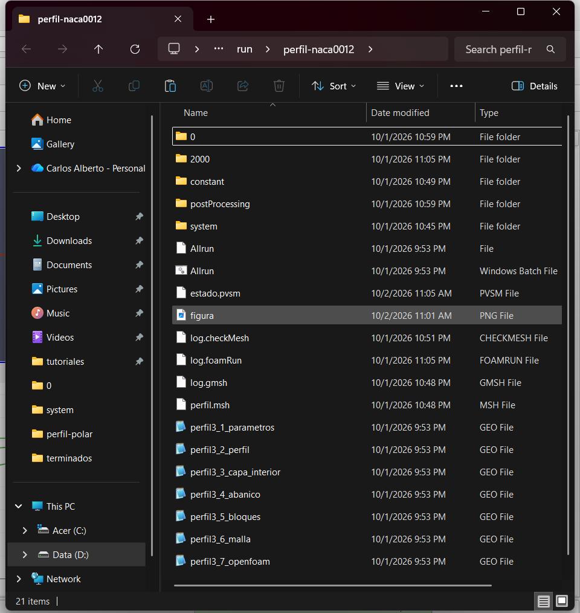
Figura 22.Lo que se guardó.figura.png y estado.pvsm, en la carpeta del caso, junto a 2000.
El árbol de filtros
Los filtros, uno por uno
El árbol de filtros de ParaView (el Pipeline Browser) queda así al terminar. Cada filtro es un cuadro verde, hijo del que le da la entrada; el ojo de la izquierda lo muestra u oculta, y sólo se ven los que tienen el ojo abierto (figura 23).
perfil-naca0012.foam: el lector. Trae las seis variables del caso y tres cosas que conviene saber: Skip Zero Time (no muestra la carpeta 0), Case Type (Reconstructed: el caso se corrió en serie), y Mesh Regions, donde se elige qué se lee: internalMesh (el volumen) o los parches (las superficies de la frontera).
Calculator1: nace del lector y trae Cp; de él cuelgan casi todos los demás.
Un segundo perfil-naca0012.foam, sólo con patch/airfoil, con Calculator2, Slice2 y PlotData1.
Figura 23.El árbol de filtros. Cada cuadro es un filtro del Pipeline Browser y cada línea, la entrada que recibe. Casi todos cuelgan de Calculator1 porque necesitan Cp o la velocidad; el segundo lector (línea punteada) sólo lee el parche airfoil.
Dos propiedades de ParaView explican casi todo lo que sale «raro» al principio. Apply: un filtro nuevo no hace nada hasta que se hace clic en él; mientras tanto el botón está verde. El ojo: un filtro se ve en la vista sólo si su ojo está abierto, y al crear un filtro, ParaView oculta el padre. Por eso en la receta se apaga y se enciende el ojo de cada filtro: sin eso, las isolíneas, los vectores y las líneas de corriente quedan unos debajo de otros.
Resultados
Lo que muestran las imágenes
Con las imágenes de la receta se lee el flujo del 2.1 casi entero.
La presión (figuras 6 y 8). El punto de remanso, en la nariz, tiene \(C_p\) = 1.000; la succión del extradós baja hasta \(C_p\) = −5.55 a menos de 1 % de la cuerda del borde de ataque y se recupera suavemente hacia el borde de salida. Las isolíneas (figura 10) se apiñan sobre la nariz, donde la presión cambia más rápido, y se abren en círculos hacia el campo lejano.
La velocidad (figuras 3 y 13). Llega a 221 m/s, 2.5 veces la del flujo libre, sobre la nariz; los vectores se aceleran sobre el extradós y se frenan al llegar al remanso y en la estela.
Las líneas de corriente (figura 14). Las que parten arriba de la línea de remanso se aprietan sobre el extradós y las de abajo se abren por debajo: es el flujo que rodea un perfil con sustentación. Todas suben hacia la derecha porque el flujo libre llega inclinado 10°; las que pasan sobre la nariz se juntan (la velocidad crece donde se aprietan) y las de abajo se separan.
La vorticidad (figura 16). Se concentra en una película pegada a la pared (la capa límite) y en la estela. Fuera de eso es casi cero: el flujo exterior es irrotacional.
La capa límite (figura 19). En x/c = 0.5 del extradós la velocidad sube de 0 a \(U_e\) = 108.9 m/s en un espesor \(\delta_{99}\) de 0.0149 c, unas 14.9 milésimas de cuerda: la capa límite del extradós es delgada.
El \(C_p\) sobre el perfil (figura 21). Las dos curvas encierran el área de la sustentación, y su diferencia es la carga sobre cada punto de la cuerda: casi toda se genera en el primer cuarto, donde la succión es mayor.
Ejemplo resuelto
Tres comprobaciones de las imágenes
Enunciado. Comprobar que las imágenes de la receta son físicas: (1) el \(C_p\) del punto de remanso; (2) el pico de succión contra el de CFL3D; (3) que la velocidad fuera de la capa límite y la presión de la pared coinciden por Bernoulli en x/c = 0.5. Condiciones: el caso del tutorial 2.1, sin cambios, en el tiempo 2001 de ParaView.
Comprobación
ParaView
Referencia
Diferencia
Cp en el punto de remanso
1.0001
1 (Bernoulli, ecuación 1)
0.01 %
Cp mínimo en el perfil
−5.555 en x/c = 0.0030
−5.664 (CFL3D, NASA)
1.9 %
Cp en x/c = 0.5 del extradós
−0.549 (leído en el perfil)
−0.546 (de Ue = 108.9 m/s, ecuación 2)
0.004 en Cp
Tabla 4.Tres comprobaciones de lo que se ve. Los valores del campo salen de las operaciones de la receta, hechas con pvpython; los de referencia, del tutorial 2.1 y de CFL3D. La tercera usa la ecuación (2): el valor de Cp que da Bernoulli con la velocidad Ue fuera de la capa límite, contra el que se lee sobre el perfil en la misma x.
1. El remanso
El máximo de \(C_p\) en el parche airfoil es 1.0001: dentro de 0.01 % del 1 que da la ecuación (1) con \(U = 0\). Si \(C_p\) máximo diera 0.8 o 1.3 habría un error en la función del Calculator (la velocidad de referencia) o en p (otra presión de referencia).
2. La succión
El mínimo de \(C_p\) sobre el perfil es −5.555 en x/c = 0.0030, a 1.9 % del de CFL3D (−5.664). Es el valor de ParaView en los puntos de la superficie del perfil (el campo en el volumen tiene el mismo mínimo, −5.555); el tutorial 2.1, con los valores en el centro de cada cara, midió −5.566. Las isolíneas de la figura 10 llegan hasta \(C_p\) = −3, el límite de la serie, y la escala de la figura 8, hasta −3 también: el pico de succión, más abajo, queda fuera de la escala y se ve oscuro justo en la nariz.
3. Bernoulli sobre el extradós
En x/c = 0.5 la velocidad fuera de la capa límite es \(U_e\) = 108.9 m/s (el máximo de la curva de la figura 19). La ecuación (1) da \(C_p\) = 1 − (108.9/87.62)² = −0.546; el valor que se lee sobre el perfil, en la misma x, es \(C_p\) = −0.549. La diferencia, 0.004 en \(C_p\), es pequeña porque la presión casi no cambia a través de una capa límite delgada (la hipótesis de Prandtl), así que la presión de la pared es la de la corriente que la rodea.
Las imágenes son físicas. El remanso da \(C_p\) = 1.000, la succión coincide con CFL3D dentro de 1.9 % y la velocidad exterior y la presión de la pared cumplen Bernoulli. Una imagen sin esas comprobaciones es sólo una imagen.
Preguntas que orientan la lectura
Con la imagen de las líneas de corriente, ¿dónde esperaría el punto de remanso: arriba o abajo de la nariz? ¿Qué ángulo de ataque lo pondría exactamente en la nariz?
La velocidad máxima es 2.5 veces la del flujo libre: ¿qué \(C_p\) le corresponde por la ecuación (1)? ¿Coincide con el mínimo de \(C_p\) de la tabla 4? Si no, ¿por qué?
¿Por qué la vorticidad es mayor en el extradós que en el intradós?
Errores frecuentes
Qué sale mal en ParaView
Todo el campo tiene un solo color
El rango de color por omisión lo fijan unas pocas celdas: en p, el pico de succión de la nariz; en la vorticidad, la pared. Con Edit Color Map y Rescale to Custom Data Range se elige un rango (tabla 3). Al cambiar de tiempo o de campo ParaView puede volver a calcular el rango: por eso conviene, además, desactivar el reescalado automático (Rescale and disable automatic rescaling).
Un filtro no muestra nada
Tres causas, por orden de frecuencia: no se hizo clic en Apply (el botón está verde); el ojo del filtro está cerrado, o su padre lo tapa; o el filtro quedó vacío (un Clip con la caja lejos del perfil, o un Contour con valores fuera del rango del campo). La pestaña Information dice cuántas celdas y puntos tiene el filtro: con 0, está vacío.
Las flechas tapan el dibujo
El Glyph por omisión escala la flecha con una variable y pone una flecha en cada punto: unas enormes y otras invisibles (figura 12). Se cambian tres cosas: Scale Array en No scale array, el factor de escala, y el Glyph Mode a un muestreo uniforme, con pocos puntos.
Las líneas de corriente salen de donde no deben
La línea de semillas del Stream Tracer tiene un tamaño por omisión que cruza todo el dominio de 1000 cuerdas, y las líneas que salen de ella apenas tocan el perfil. Se acerca la línea al perfil (de 0.6 cuerdas de largo, delante de la nariz) y se limita la longitud de las líneas a unas cuerdas.
El filtro «Calculator» no encuentra la variable
La presión se llama p y la velocidad U en los datos de punto (Point Data); si el Calculator está en Cell Data o la variable se escribe con minúscula, ParaView avisa con un mensaje en Output Messages y el resultado sale vacío. El caso se lee con «Create cell-to-point filtered data» marcado, que es lo que da los datos de punto.
La vorticidad no aparece en el filtro Gradient
En ParaView 5.11 la casilla Compute Vorticity sólo se ve con las propiedades avanzadas activas (el engrane a la derecha del buscador del panel Properties). Sin eso el filtro se ve incompleto: sólo el gradiente. Además, sólo funciona con un vector de tres componentes: con p en Scalar Array, ParaView avisa «Input array must have exactly three components».
La recta de Plot Over Line no toca el perfil
Una recta que empieza dentro del perfil o por encima de la capa límite da una curva sin sentido: sale una parte plana a cero (dentro del perfil, donde no hay celdas) y la velocidad no se asienta. En la receta la recta empieza en y = 0.0522, justo arriba de la pared de la malla en x/c = 0.5 (0.0522; el perfil exacto mide 0.0529, porque la malla es de caras planas y queda un poco por dentro); con 0.0529 la recta empezaría 0.0007 arriba de la pared y la curva arrancaría en unos 58 m/s en lugar de en 12. En otra x hay que averiguar la altura de la pared: con Information sobre el segundo lector, o con un Probe Location bajando hasta que el valor deje de ser cero.
Práctica sugerida
Las mismas imágenes a 16°
Enunciado. Repetir las imágenes con el caso a 16° de la polar del tutorial 2.2 (la carpeta a16) y compararlas con las de 10°. Condiciones: los mismos filtros, los mismos rangos de color (\(C_p\) de −3 a 1 sirve para ver la comparación; para ver todo el pico de succión, de −8 a 1) y la misma recta de Plot Over Line en x/c = 0.5. Se puede hacer con File ▸ Load State… y estado.pvsm, cambiando sólo el archivo del lector, o abriendo las dos carpetas a la vez en dos vistas (Split Horizontal Axis).
El procedimiento, en corto
En la terminal, cd $FOAM_RUN/perfil-polar/a16 y paraFoam; con File ▸ Load State… se carga estado.pvsm y ParaView pide el archivo del lector: se elige a16.foam.
Se mueve la cámara (Adjust Camera) y se ajusta la línea de Plot Over Line a la pared de 16° (la altura cambia).
Se llena la tabla de abajo con el pico de succión, la velocidad máxima y \(\delta_{99}\) en x/c = 0.5.
Registro de resultados
α
Cp,min
|U|máx (m/s)
δ99 en x/c = 0.5 (c)
Ue en x/c = 0.5 (m/s)
10°
−5.55
221
0.0149
108.9
16°
Tabla 5.Registro de resultados. La primera fila es del caso a 10° (lo que se midió en este tutorial); la segunda es para llenarla con el caso a 16° de la polar del tutorial 2.2, y la tercera, con otro ángulo a elección.
Preguntas que orientan la lectura
¿Cuánto crece el pico de succión de 10° a 16°? ¿Y la velocidad máxima? ¿Cómo se relacionan por la ecuación (1)?
¿Cambia la posición del punto de remanso? ¿Hacia dónde se mueve en las líneas de corriente?
¿Se ve en la vorticidad algún signo de que la capa límite empieza a desprenderse a 16°? ¿Dónde esperaría ver primero el engrosamiento?
Fuentes
Referencias
Ahrens, J., Geveci, B. y Law, C. (2005). ParaView: an end-user tool for large-data visualization. En C. D. Hansen y C. R. Johnson (eds.), The Visualization Handbook. Elsevier.
Kitware (2022). The ParaView Guide (versión 5.11). Kitware, Inc. www.paraview.org
Anderson, J. D. (2017). Fundamentals of aerodynamics (6.ª ed.). McGraw-Hill. Capítulos 3 y 4: la presión y el coeficiente de presión; la vorticidad y la circulación.
Schlichting, H. y Gersten, K. (2017). Boundary-layer theory (9.ª ed.). Springer.
NASA Langley Research Center (s. f.). Turbulence Modeling Resource: 2D NACA 0012 airfoil validation case. turbmodels.larc.nasa.gov/naca0012_val.html
Todas las cifras salen del caso del tutorial 2.1 (OpenFOAM 12, blueCFD-Core 2024, laptop con Windows 11), leídas con ParaView 5.11.2 (pvpython) con las mismas operaciones de la receta; las de CFL3D, de los archivos de la NASA que trae el caso del 2.1. Las capturas son de ParaView 5.11.2 y de la terminal de blueCFD-Core.
Lernziele
Was Sie danach können sollten
Vollständige deutsche Übersetzung in Vorbereitung. Jeder Abschnitt enthält eine Zusammenfassung; der vollständige Text mit Abbildungen und Tabellen liegt in der spanischen Fassung vor, die über die Schaltfläche ES oben erreichbar ist.
Einen OpenFOAM-Fall in ParaView öffnen und Filter für Filter die übliche Nachbearbeitung eines Profils aufbauen: Druck- und Geschwindigkeitsfelder mit sinnvollen Wertebereichen, Druckbeiwert mit einem Calculator, Konturlinien, Geschwindigkeitsvektoren, Stromlinien, Wirbelstärke, ein Grenzschichtprofil und die C_p-Kurve entlang des Profils; danach ein Bild und den Zustand speichern.
Das Problem
Was nachbearbeitet wird
Die Lösung ist das NACA 0012 bei 10° aus Tutorial 2.1 (Re = 6·106, Spalart-Allmaras, 66 156 Zellen, Fernfeld bei 500 Sehnenlängen). Nichts wird neu gerechnet: Jedes Bild ist eine andere Art, dieselben Dateien zu lesen.
Die Theorie
Was jedes Bild aussagt
Der Druckbeiwert Cp = p / (½U∞²) (p ist in OpenFOAM kinematisch), der Staupunktwert 1, die Bernoulli-Verbindung zwischen Cp und der Geschwindigkeit außerhalb der Grenzschicht, Stromlinien als Integralkurven der Geschwindigkeit, die Wirbelstärke ωz = ∂v/∂x − ∂u/∂y und die Grenzschichtdicke.
Schritt für Schritt
Vom Farbverlauf zur C_p-Kurve
paraFoam; Apply und Last Frame; Einfärben nach U und p; Edit Color Map und Rescale Custom Range; Calculator; die Farbpalette; Slice und Contour; Clip und Glyph; Stream Tracer; Gradient mit Wirbelstärke; Save Screenshot; Plot Over Line; der zweite Reader mit dem Airfoil-Patch und Plot Data; Save State.
Die Filterkette
Die Filter, einzeln
Die Filterkette: Reader → Calculator1 (Cp) → Slice1 → Contour1; Clip1 → Glyph1; StreamTracer1; Gradient1; PlotOverLine1; und ein zweiter Reader auf dem Patch airfoil → Calculator2 → Slice2 → PlotData1.
Ergebnisse
Was die Bilder zeigen
Staupunkt bei Cp = 1, die Saugspitze −5,55 an der Nase, Geschwindigkeiten bis 221 m/s, eine dünne Grenzschicht und ein Nachlauf geringer Geschwindigkeit hinter der Hinterkante.
Durchgerechnetes Beispiel
Drei Prüfungen der Bilder
Drei Prüfungen: Cp = 1 am Staupunkt; die Saugspitze gegen CFL3D (−5,55 gegen −5,66); und Cp bei x/c = 0,5 aus Bernoulli mit der Geschwindigkeit außerhalb der Grenzschicht gegen den am Profil gelesenen Wert.
Häufige Fehler
Was in ParaView schiefgeht
Alles hat eine Farbe (ein Wert bestimmt den Bereich); der Filter zeigt nichts (Elternfilter verdeckt oder nicht angewendet); die Vektoren bedecken das Bild; der 3D-Schnitt; die Linie verfehlt das Profil; ParaView zeigt keine x-Achse.
Übungsvorschlag
Dieselben Bilder bei 16°
Dieselben Bilder mit dem Fall a16 aus Tutorial 2.2 in einer zweiten Ansicht neben der von 10° wiederholen und die Saugspitzen und die Grenzschichtdicke vergleichen.
Quellen
Literatur
ParaView Guide und Tutorial; Anderson (2017); NASA Turbulence Modeling Resource; Schlichting und Gersten.